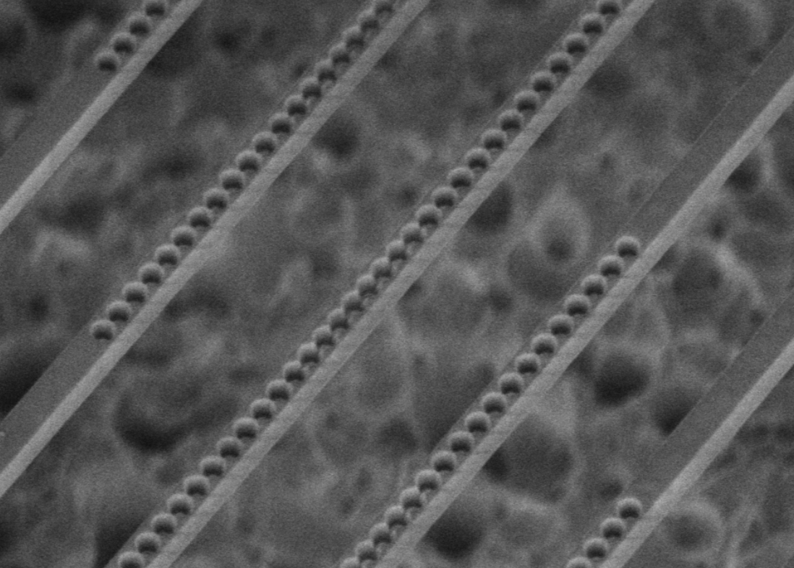
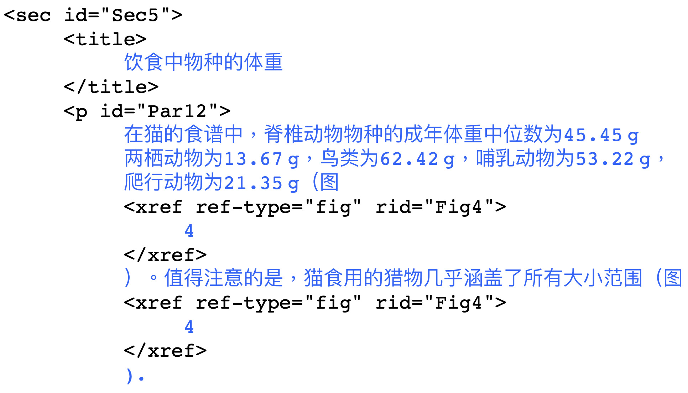
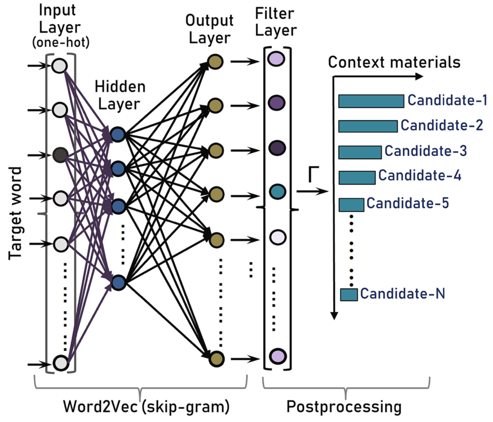
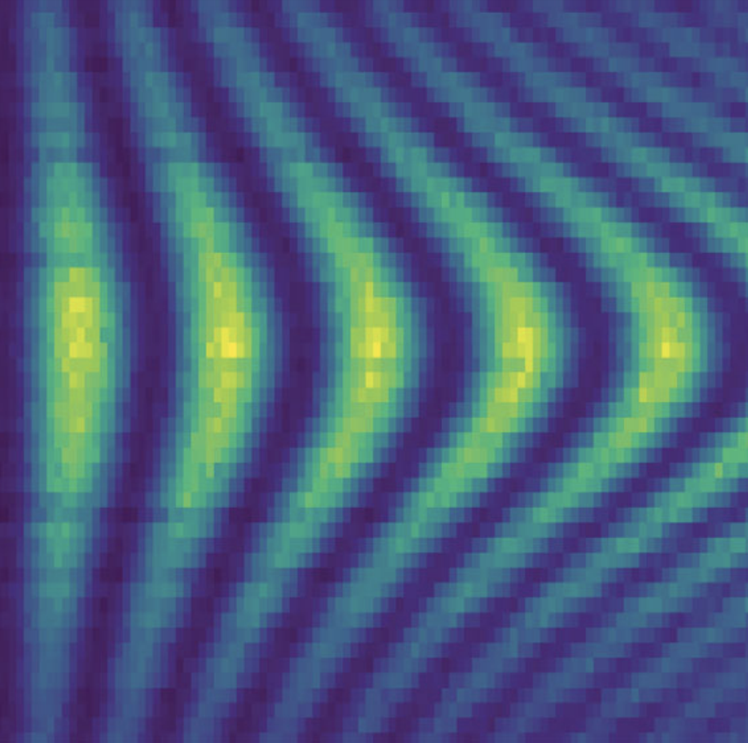

I am a Ph.D. Candidate at Stanford University, advised by Jelena Vučković. My research focuses on enhancing tin-vacancy defects in diamond using nanofabricated cavities, a promising platform for quantum technologies. In collaboration with James Zou, I develop LLM–based methods for quantum optics research, including theoretical problem solving and learning physical models from experiments.
I obtained a B.S. in Electrical Engineering and Computer Sciences from the University of California, Berkeley, where I worked on computational materials discovery and spintronics.



